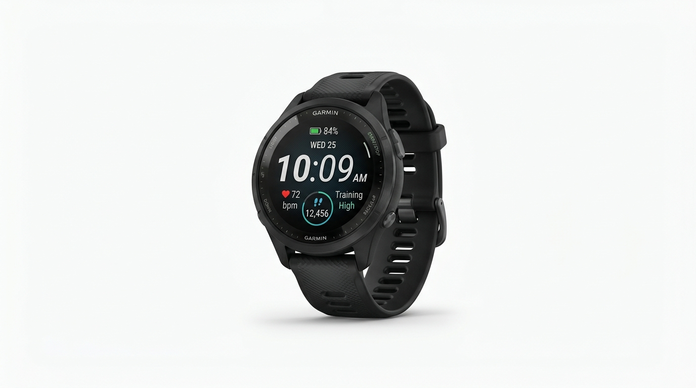
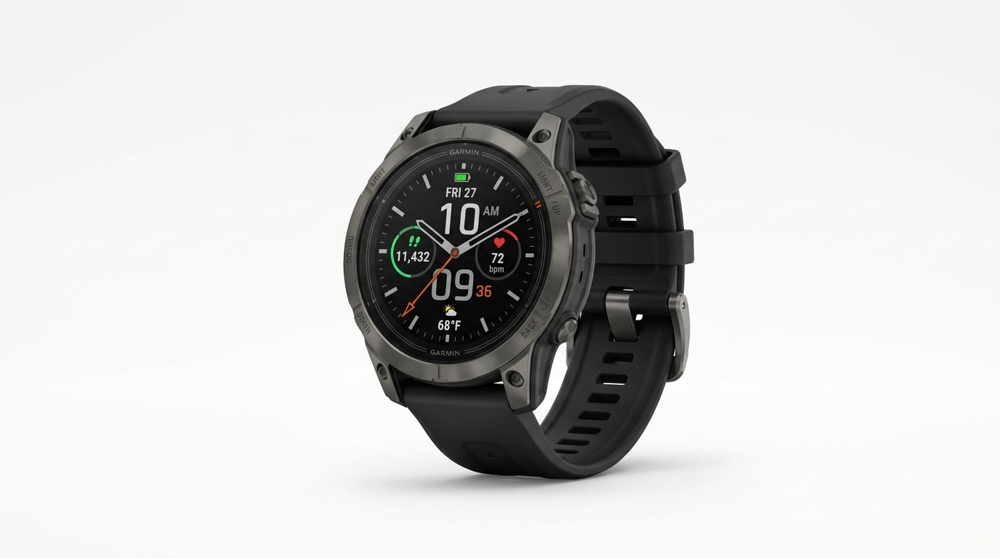

Часы Garmin — оптовые поставки из Дубая в Армению




MIRSAQ General Trading LLC поставляет 100% оригинальные часы Garmin оптом из Дубая в Ереван, Гюмри и все города Армении. Fenix 8, Epix Pro, Forerunner 965, Instinct 2 Solar — заводская упаковка, авиадоставка 2–4 дня. Любые объёмы.


Отправьте список моделей Garmin в WhatsApp — подтвердим наличие и цены в течение нескольких часов и отправим из Дубая в Армению за 2–4 рабочих дня.
Also available for